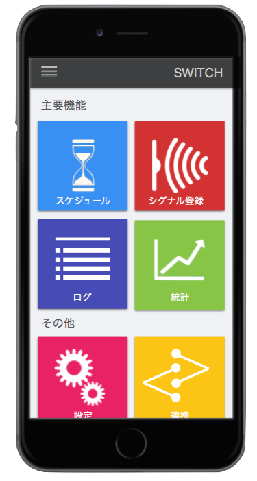
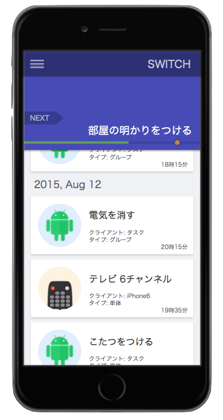

Webサーバーを利用したIR機器の一元管理
私たちプロジェクト６のメンバーは、一人暮らしの人が過半数を占めています。そんな私達ならではの悩みとしてこんなものがあります。
- 外出先から帰る前に、あらかじめ暖房やこたつの電源を入れて部屋を暖めておきたい
- 部屋の電気つけたまま、出てきてしまったかもしれない
- 外出中でもペットの様子を確認したり、ご飯をあげたい
- 今日あのテレビ番組の予約を忘れちゃった
- リモコンを無くしてしまう


ユビキタス社会の黎明期におけるIoT技術の習得
IoTという一時期話題になったバズワードが、Uber等のサービスを筆頭に具体性を持ってきた今、全てのものがネットに繋がる社会という未来も現実味を帯びてきました。
未来のエンジニアは、ソフトウェアの技術だけでなく、ファームウェアやハードウェアの知識も求められるかもしれません。
ITという分野が勢いを増し、エンジニアの人口も年々増えています。私たちはこの技術競争の中でどのような術をもって立ち向かえば生き残れるのでしょうか。
そんな処世術の一つに、新しいことを広く浅く知り、深めていくことがあげられます。
私たちは、このプロジェクトを通して、揺籃期のIoT社会に必要な知識を身につけることを目指しています。
未来のエンジニアは、ソフトウェアの技術だけでなく、ファームウェアやハードウェアの知識も求められるかもしれません。
ITという分野が勢いを増し、エンジニアの人口も年々増えています。私たちはこの技術競争の中でどのような術をもって立ち向かえば生き残れるのでしょうか。
そんな処世術の一つに、新しいことを広く浅く知り、深めていくことがあげられます。
私たちは、このプロジェクトを通して、揺籃期のIoT社会に必要な知識を身につけることを目指しています。